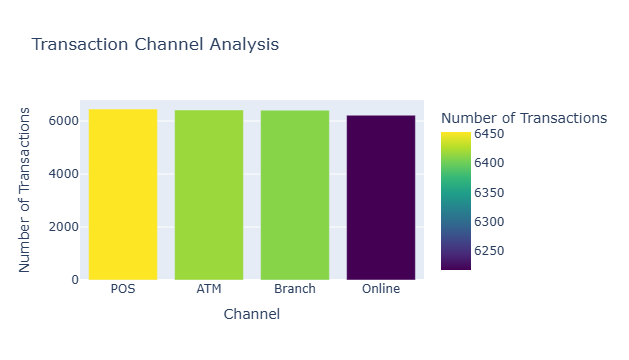
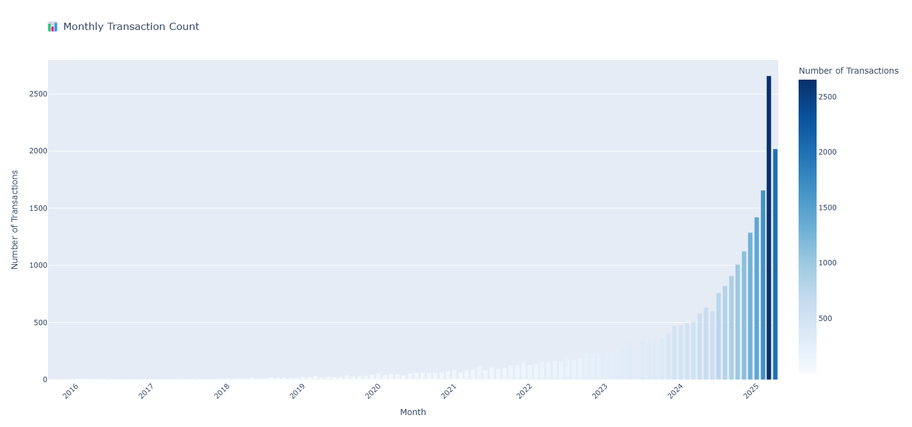
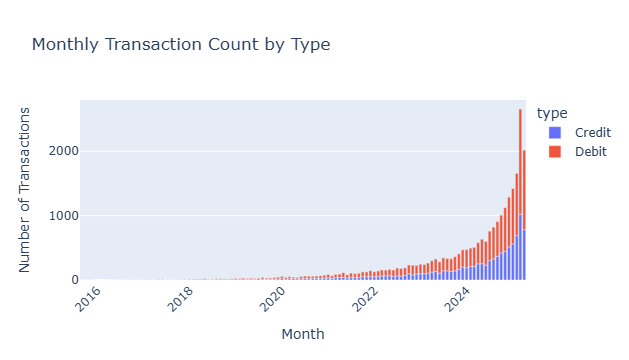
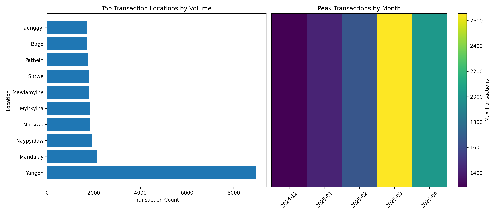
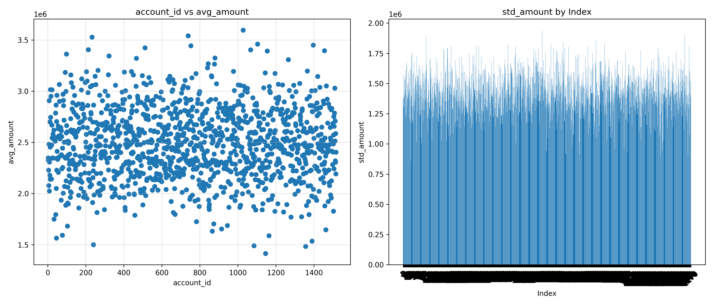

Transaction Analysis
Channel mix, transaction growth, and amount distributions to support operational and product decisions.
Project Overview
This project analyzes banking transaction patterns across channels, locations, and time periods to identify operational insights, customer behavior trends, and opportunities for process optimization. By examining transaction volumes, amounts, and distributions, we provide actionable recommendations for resource allocation, fraud detection strategies, and customer segmentation.
1. Transaction Channel Analysis
This chart compares transaction counts across POS, ATM, Branch, and Online channels. POS and ATM have slightly higher volumes, while Online is catching up quickly—showing rising digital adoption. The distribution is balanced, indicating customers use multiple channels consistently.
Insight: Apply channel-specific fraud controls—device/IP checks for online, card-present verification for POS, and withdrawal velocity rules for ATM.
📊 Data Files:
- transaction_channel_analysis.csv — Transaction counts by channel
- monthly_transactions_summary.csv — Monthly transaction overview
2. Distribution of Average Transaction Amounts per Account
The distribution appears bell-shaped, showing that most customers transact within normal mid-range amounts. The boxplot highlights a tight middle range but also shows clear high-value and low-value outliers.

Insight: Segment customers into low, medium, and high average spenders to create dynamic limits and improve fraud detection on unusual spending patterns.
📊 Data Files:
- transaction_statistics_per_account.csv — Account-level transaction statistics
- transaction_statistics_per_account_with_customer_id.csv — Customer-specific transaction stats
3. Monthly Transaction Count (Trend)
From 2016 to 2022, transaction counts grow steadily. Around 2023, a sharp increase begins, accelerating into 2024–2025. This surge suggests major digital expansion or a successful product rollout.
Insight: Rapid growth requires scaling infrastructure and real-time monitoring systems to avoid delays and maintain fraud detection accuracy.
📊 Data Files:
- monthly_transactions_summary.csv — Monthly transaction totals
- peak_transaction_months.csv — Peak transaction period analysis
- highest_revenue_months.csv — Highest revenue months
4. Monthly Transaction Count by Type (Credit vs Debit)
Both debit and credit transactions increase over time, but the rapid rise in 2024–2025 is driven mainly by debit transactions. Debit forms the larger share of total transaction volume.
Insight: Prioritize debit-specific controls such as daily limits, velocity checks, and anomaly detection while tuning credit rules separately.
📊 Data Files:
- monthly_transactions_by_type.csv — Transaction breakdown by type
- customer_usual_patterns.csv — Customer transaction patterns
5. Transaction Location Analysis
Geographic analysis reveals transaction hotspots and regional patterns. Understanding location-based transaction behavior helps optimize branch placement, ATM deployment, and regional marketing strategies. Peak transaction locations show where operational resources should be concentrated.
Insight: Use location data to optimize branch hours, ATM placement, and regional fraud detection parameters based on local transaction patterns.
📊 Data Files:
- top_transaction_locations.csv — Highest volume transaction locations
- location_transaction_summary.csv — Location-based transaction summary
- location_peak_transaction_summary.csv — Peak transaction times by location
- monthly_transactions_by_location.csv — Monthly transactions by location
6. Customer Transaction Behavior Patterns
Analysis of individual customer transaction behaviors reveals distinct spending patterns, frequency preferences, and channel usage habits. Segmenting customers based on these patterns enables personalized service offerings, targeted marketing, and customized risk management approaches.
Insight: Develop customer personas based on transaction behavior to improve product recommendations and detect anomalous activities more effectively.
📊 Data Files:
- customer_usual_patterns.csv — Customer transaction behavior patterns
- all_loc_date_peak_least_tran_amount_summary.csv — Comprehensive location-date analysis
Overall Summary & Operational Insights
Transaction analysis reveals significant growth opportunities and operational considerations:
Key Findings:
- Digital channel adoption is accelerating, with online transactions showing the fastest growth rate
- Debit transactions drive the majority of recent volume increases, requiring focused risk management
- Transaction distribution follows a normal pattern with identifiable high-value customer segments
- Geographic analysis reveals clear transaction hotspots that should inform resource allocation
- The 2023-2025 surge indicates successful digital transformation initiatives
Business Impact: Optimized channel strategy, improved fraud detection accuracy, data-driven resource allocation, and enhanced customer segmentation for targeted marketing.
Strategic Recommendations
To maximize operational efficiency and customer experience:
- Scale digital infrastructure: Invest in cloud-based systems to handle exponential transaction growth
- Implement dynamic limits: Create transaction limits based on customer segments and behavior patterns
- Optimize channel strategy: Allocate resources based on channel usage trends and growth projections
- Enhance location-based services: Use geographic insights to improve branch and ATM placement
- Develop personalized offerings: Leverage customer behavior patterns for targeted products and services
- Strengthen real-time monitoring: Implement advanced analytics for immediate fraud detection and operational alerts
Complete Dataset Collection
📂 All Project Data Files:
- all_loc_date_peak_least_tran_amount_summary.csv — Comprehensive location-date transaction analysis
- customer_usual_patterns.csv — Customer transaction behavior patterns
- highest_revenue_months.csv — Monthly revenue performance
- location_peak_transaction_summary.csv — Peak transaction analysis by location
- location_transaction_amount_summary.csv — Transaction amounts by location
- location_transaction_summary.csv — Location-based transaction overview
- monthly_transactions_by_location.csv — Monthly transactions by geographic location
- monthly_transactions_by_type.csv — Monthly breakdown by transaction type
- monthly_transactions_summary.csv — Comprehensive monthly transaction summary
- peak_transaction_months.csv — Analysis of highest transaction months
- top_transaction_locations.csv — Highest volume transaction locations
- tran_sum_locations_by_month.csv — Monthly location transaction summaries
- transaction_channel_analysis.csv — Channel-specific transaction analysis
- transaction_statistics_per_account.csv — Account-level transaction statistics
- transaction_statistics_per_account_with_customer_id.csv — Customer-specific transaction statistics